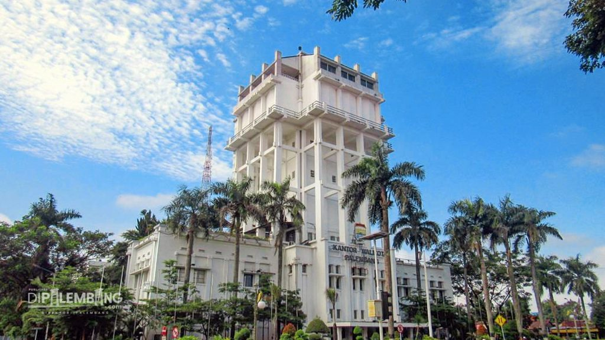
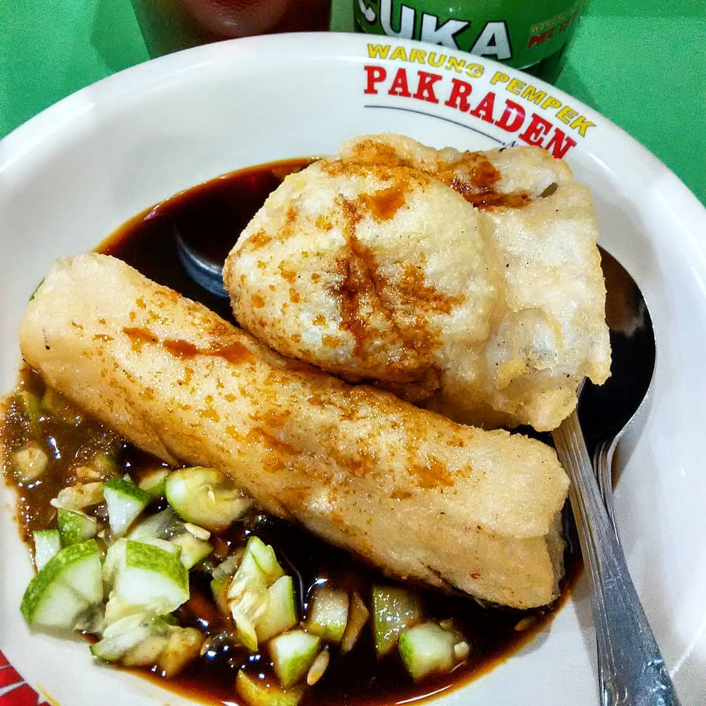
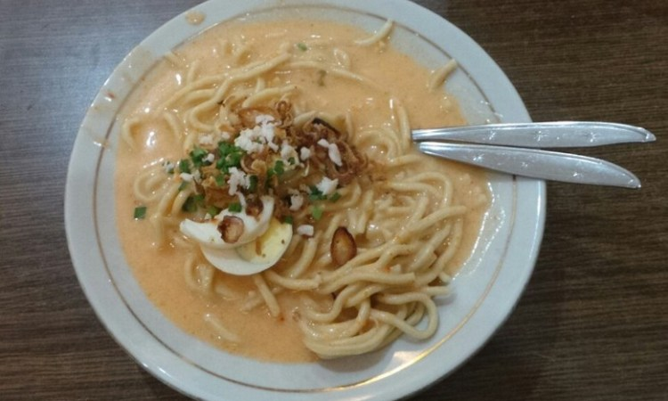
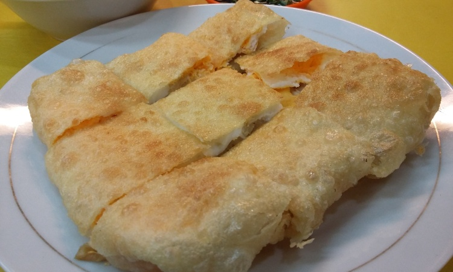

Sejarah

Kota Palembang merupakan kota tertua di Indonesia berumur setidaknya 1337 tahun jika berdasarkan prasasti Sriwijaya yang dikenal sebagai prasasti Kedudukan Bukit. Menurut Prasasti yang berangka tahun 16 Juni 682.
Berkemungkinan karena kondisi inilah maka nenek moyang orang-orang kota ini menamakan kota ini sebagai Pa-lembang dalam bahasa melayu Pa atau Pe sebagai kata tunjuk suatu tempat atau keadaan; sedangkan lembang atau lembeng artinya tanah yang rendah, lembah akar yang membengkak karena lama terendam air (menurut kamus melayu), sedangkan menurut bahasa melayu-Palembang, lembang atau lembeng adalah genangan air. Jadi Palembang adalah suatu tempat yang digenangi oleh air.
Geografis
Palembang merupakan salah satu kota metropolitan di Indonesia dan secara geografis terletak antara 2o 52′ sampai 3o 5′ Lintang Selatan dan 104o 37′ sampai 104o 52′ Bujur Timur dengan ketinggian rata-rata 8 meter dari permukaan air laut. Luas wilayah Kota Palembang sebesar 400,61 km2 yang secara administrasi terbagi atas 16 kecamatan dan 107 kelurahan.
Kuliner
Banyak sekali kuliner yang dapat kita temui dikota ini dan sangat enak berikut 3 kuliner yang wajib anda coba ketika berkunjung dikota ini!
Pempek

Hampir semua orang pastinya sudah pernah mencoba pempek. Sajian ini terbuat dari daging ikan dan sagu, yang kemudian dimodifikasi dengan tambahan tahu, udang, telur dan lainnya. Pempek kemudian disajikan dengan saus khusus, yang terbuat dari campuran gula merah, cabe, bawang putih, garam dan udang ebi. Dari bahannya, membayangkannya saja sudah luar biasa, apalagi saat mencobanya.
Mie Celor

Mie celor 23 ilir adalah salah satu sajian khas Palembang yang mempunyai cita rasa cukup pedas. Hal ini menjadikan mie celor banyak diminati oleh wisatawan yang menyukai sensasi makanan dengan rasa pedas yang tinggi. Mie celor mempunyai bentuk dan rupa yang hampir sama dengan udon. Namun yang menjadi perbedaan disini adalah siraman kuah kental pedas dan juga berbagai macam topping yang membuat mie celor tersebut lebih kaya akan rasa.
Martabak har

Selain pempek, Palembang juga sudah dikenal sejak dulu dengan produk Martabak Har. Martabak tersebut sudah berdiri sejak tahun 1947 silam, sehingga keberadaannya juga tentunya sudah sangat populer di kalangan wisatawan. Anda bisa menemukan martabak har hampir di setiap sudut kota Palembang, karena memang sudah mempunyai banyak cabang. Ciri dari martabak ini adalah kuah saus kari yang disiram diatas martabak, sehingga membuat makanan tersebut lebih menggoda lidah.